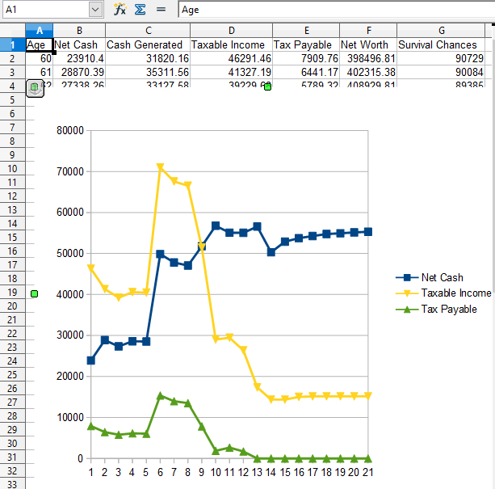

The source code is here.
Scenario File
This tool is focused almost entirely on the retirement phase of life (spending), not on the working phase of life (saving).
The main steps in using this tool:
An example chart made with Open Office (cash-and-tax-summary.csv):

An example chart made with Google Sheets (cash-flows.csv):
The level of detail in this tool is higher than usual. Whereas most tools focus on a high-level rate of return, this tool actually goes through every single day of your retirement, and applies transactions to your accounts. It also calculates a basic tax return at the end of every year.
The level of detail will not reflect your actual reality 100%, but it will get you closer to reality than most other tools. It's a trade off: in a perfect world, matching reality 100% is of course desirable; but to implement all possible cases for all possible conditions is not practical here. So this tool tries to reach a compromise, and tries to reflect reality to a reasonable degree, but not with 100% accuracy.
Every retirement financial plan should be supported by a robust simulation showing you the numbers. Personal finance is quite complex. There are many moving parts, and how those parts all work together in your particular case can be found only with a simulator. You can't do these calculations in your head, and you shouldn't rely entirely on rules of thumb, because such rules usually have exceptions.
This tool has:
There are two important issues which I hope to address soon:
Some items that aren't modeled explicitly can still be effectively modeled by the system. For example, the sale of a primary residence can be modeled as a simple windfall deposited to your bank account, since no tax is paid on the capital gain when you sell your home.
There are two distinct types of scenarios:
Examples of approximations made by the tool:
When creating your own scenario, it's always best to start with a working example. Then you gradually change the scenario, step by step, to get closer to your own case. As you make a small edit, you save your changes and test them by running the tool, to see if everything still works. You keep repeating this until you get to your desired final scenario. This is the safest way of proceeding.
Note that the .ini file is the scenario file, and the remaining files in the directory are outputs that result from executing the scenario. The provincial tax return is for PE, Prince Edward Island, simply because that's where the author resides. The tool allows for all other provinces as well.
| ID | Description |
|---|---|
| 01.1 | Never worked, no savings, retires at 65. OAS/GIS, rent 700. PE. Deterministic. |
| 01.2 | Worker with no savings, retires at 65. CPP 300/month, OAS/GIS. PE. Deterministic. |
| 01.3 | Worker with no savings, retires at 65. Average CPP 673/month, OAS/GIS, PE. Deterministic. |
| 01.4 | Worker with no savings, retires at 65. CPP max monthly 1175.75, OAS/GIS. PE. Deterministic. |
| 02.1 | Only a TFSA with 50k in blue-chip dividends. Half the average CPP. 3% dividend growth, 3% stock price growth. |
| 02.2 | Only a TFSA with 100k in blue-chip dividends. Half the average CPP. 3% dividend growth, 3% stock price growth. |
| 02.3 | Only a RIF with 100k in blue-chip dividends. Half the average CPP. 3% dividend growth, 3% stock price growth. |
| 02.4 | Only a NRA with 100k in blue-chip dividends. Half the average CPP. 3% dividend growth, 3% stock price growth. |
| 03.1 | Dividends only, never sell stocks. 3% dividend growth, 3% stock price growth. |
| 07.1 | Pension 2000 monthly, no other savings, house unsold, retires at 65. Average CPP 673/month, OAS/GIS. PE. Deterministic. |
| 07.2 | Govt of Canada pension 2234.00/month, no other savings, house unsold, retires at 65. Average CPP 673/month, OAS/GIS. PE. Deterministic. |
| 07.3 | GOC large pension 5483/month, no other savings, house unsold, retires at 65. Average CPP 673/month, OAS/GIS. PE. Deterministic. |
| 08.1 | Fixed 3% growth in stock prices. Liquidate rif-nra-tfsa 6-3% when 65+. Top up TFSA first with NRA, then RIF. PE. |
| 08.2 | Fixed 3% growth in stock prices. Liquidate rif-nra-tfsa 6-3% when 65+. Top up TFSA first with RIF, then NRA. PE. |
Spending generally decreases significantly in old age. Many people think in terms of having a flat cash flow, the same from retirement until death. But, in reality, your spending usually decreases in old age. It's a challenge to generate a cash flow curve that starts out higher and ends up lower, because the natural tendency for cash flow is to grow over time. For those on a government pension (and with no other savings), the cash flow is basically flat over time, so there may not be much you can do about it.
Many people die too rich. The psychology of the saver is different from the psychology of the spender. Some people spend many years as a saver, and later fail to change into a spender. They keep growing their net worth until the end. That isn't necessarily the wrong thing to do, but for many it's likely not the best outcome. Oversaving can be as bad as overspending; perhaps it's best to avoid extremes.
It's the net cash flow that's most important. That's where the focus should be. An example I saw had two scenarios, A vs B: A had 14k less tax than B, but only 2.9k more net cash than B. If you leave out the net cash, and only focus on the tax saving, then you aren't fully informed.
Living only off of dividends is almost always an error. Some investors are enthusiastic about dividend stocks, and attempt to generate cash flow only from the dividends, without selling any of the principal invested in the stocks. During retirement, there's no need to be so conservative. Occasionally selling a small portion of your principal can generate a lot more cash flow, and is almost always better than relying solely on the dividends.
Selling stocks when the market is up, as opposed to when you want the cash, or according to a fixed schedule, is very beneficial. Given the large possible swings in stock prices, it makes sense to do profit-taking when the price is up. You then save the cash for your future needs in 1-2 years (perhaps by purchasing a GIC). You should avoid being compelled to sell stocks at a particular time. The typical recession lasts about 1.5 years.
Desiring a sizeable legacy changes your plan significantly. You have to understand what your goal is for your estate. Some want to leave a significant legacy, and others want to spend as much as they can. Both points of view are valid. But you have to know which is best for you, and act accordingly.
You contribution room to your TFSA in retirement will often be much larger than the yearly increase. You will usually be withdrawing from your TFSA in retirement. This will increase your TFSA contribution room by the amount of the withdrawals. This lets you move assets from your RIF or non-registered account into the TFSA.
Retirement planning is different from other projects, because it involves your own death. It's useful to be reminded that you might, by chance, die sooner rather than later. The basic statistic from Statcan in this regard is interesting: the idea is that you start with a cohort of 100,000 people at birth, and you then simply list the number of people that are still alive at each age. Here are some numbers for Canada as a whole, showing the number remaining at a given age, out of an initial cohort of 100,000 at birth:
| Age | Female | Male |
|---|---|---|
| 60 | 94,419 | 90,729 |
| 65 | 91,919 | 86,908 |
| 70 | 88,005 | 81,167 |
| 75 | 81,845 | 72,651 |
| 80 | 72,262 | 60,447 |
| 85 | 57,964 | 44,208 |
| 90 | 38,681 | 25,542 |
The output spreadsheet files of this project usually incorporate this stat as a reminder of its importance.
It's almost always best to start with an example scenario file that is closest to your situation. Then you gradually modify it, one piece at a time.
Note that:
There's a special on syntax for controlling when transactions are applied, and it occurs in various places. Examples:
bank-debit-credit 925.00 on *-01This means your bank is debited 925.00 on the first of every single month.
on 2027-11-25This means on that specific day, and no other.
on *-11-25This means on every November 25th.
on *-03-01,*-06-01,*-09-01,*-12-01This means on every March 1, June 1, September 1, and December 1 (quarterly dividend payments, for example).
sell 6.0% on *-11-26 | 2027-01-01..2034-12-31Executed every November 26, in the years 2027 to 2034. When the "|" appears, it adds start-date, end-date, or both. There are 3 variations
sell 6.0% on *-11-26 | 2027-01-01..2034-12-31 # start-date and end-date sell 6.0% on *-11-26 | 2027-01-01.. # only start-date sell 6.0% on *-11-26 | ..2034-12-31 # only end-dateAn exception to the above is the purchase of a GIC, which always uses a specific date. In this case, the ":" character is used instead of the on statement:
buy-gic rif "Cda Trust" 5700.00 2.5% 1-year : 2024-06-21
Some examples have various alternatives. One of the alternatives will be the active one, while the others are all commented out because the line starts with a '#' sign. This lets you quickly change alternatives, by commenting out everything except the one you really want.
Outside of the transactions block, items are usually required. Any optional items are indicated as such below.
syntax-version = v1.0.0States that this scenario file was created with a given version of the syntax for scenario files (which may change over time). The idea is to ensure that code processing a scenario file knows the exact syntax of the file it's supposed to process. The code is not smart enough to be backwards-compatible with "old" versions of the syntax.
description = "101.6: Fixed 3% growth in stock prices..."A free-form, high-level description of important aspects of the scenario.
number-of-iterations = 1Usually 1. You change it to more than 1 when you want to repeat the scenario, from start to finish, multiple times. This only makes sense if the various iterations have different results. For example, when stock prices are generated using randomness, running multiple iterations makes logical sense, to see the general spread in the resulting outputs. When greater than 1, the generated .csv files are completely different.
simulation-start-date = 2022-01-01 simulation-end-date = 2042-12-31The start and end dates for running the simulation. If multiple iterations are run, then each iteration starts with the start date. Optionally, there can also be a test to see if the person has died at the end of the year. If that is activated, then the simulation will often terminate before the end date is reached. (See below.)
date-of-birth = 1962-05-21 annual-test-for-survival sex = maleThe person's date of birth is used for various calculations. The annual-test-for-survival is optional. If annual-test-for-survival is included, then at the end of each simulated year, a statistical test is performed by the system, to see if the person will survive into the next year. If they fail to survive the test, then they die, and the simulation/iteration is terminated. This feature uses life-tables from Statistics Canada, and those tables are different between males and females.
year-zero-amounts {
net-income-before-adjustments = 15180.00 # line 23400
net-income = 15180.00 # line 23600
oas-income = 0.00
employment-income = 0.00
}
The simulation starts in the middle of life, and some items in the tax return need to refer to the previous year.
For the first year in the simulation, there is no data for the previous year, so this data fills that gap.
oas {
monthly-amount-at-65 = 648.67 # as of 2022-06
start-month = 2027-06 # month of first payment
payment-day = 28 # day of the month; never more than 28
clawback-threshold = 81761.00 # as of 2022; versus line 23400 of last year's tax return
clawback-percent = 15%
monthly-reward = 0.7% # for every month oas is delayed past 65
boost-age = 75 # the age at which OAS is boosted by 10%
boost-percent = 10%
start-window-begin = 65
start-window-end = 70
gis-employment-exemption = 5000.00
}
The data used to calculate the OAS (Old Age Security) benefit.
The start-month is especially important.
The earliest start-month is the month AFTER you turn 65.
The latest start-month is the month AFTER you turn 70.
cpp {
# can be used for QPP as well, since they have nearly the same core logic
nominal-monthly-amount = 850.00 # if the person starts at age 65
start-month = 2022-06 # the month of first payment
payment-day = 28 # day of the month; not more than 28
monthly-reward = 0.7% # for every month cpp is delayed past age 65
monthly-penalty = 0.6% # for every month cpp is started before age 65
start-window-begin = 60
start-nominal = 65
start-window-end = 70
survivor-benefit-amount = 1000.00 # optional
survivor-benefit-start = 2030-02-25 # optional
}
The data used to calculate your CPP benefit.
The nominal-monthly-amount and the start-month are especially important.
The start-month is often the month AFTER you turn 65.
The earliest start-month is the month AFTER you turn 60.
The latest start-month is the month AFTER you turn 70.
The two survivor items are optional, and come as a pair.
In this simplified implementation, an optional survivor benefit is paid only if you are already receiving regular CPP payments.
In that case, your CPP payment can be increased by a survivor benefit.
rif-minimum-withdrawals {
# Applied to the market value of the RIF at the start of each year.
# The left-hand side is your age on Jan 1. For ages outside this range, a formula applies
# Ref: https://www.budget.gc.ca/2015/docs/plan/anx5-1-eng.html
71 = 5.28%
72 = 5.40%
...elided for brevity...
93 = 16.34%
94 = 18.79%
}
Optional. RIF accounts always have a minimum annual withdrawal.
For some ages, a formula applies; for others, this table is used.
federal-tax {
# Tax return settings.
# These numbers are for 2021. Update them each year.
initial-year = 2022 # must agree with simulation-start-date!
personal-amount = 12241.00 # Worksheet for line 30000
personal-amount-additional = 1387.00
personal-amount-threshold = 151978.00_216511.00
age-amount = 7713.00 # Worksheet line 30100
age-amount-threshold = 38893.00
pension-income-max = 2000.00 # line 31400
tax-brackets {
15.00% : 49020.00
20.50% : 98040.00
26.00% : 151978.00
29.00% : 216511.00
33.00% : 100000000.00
}
rif-withholding-tax-brackets {
# these amounts are above the rif's minimum withdrawal for that year
10.00% : 5000.00
20.00% : 15000.00
30.00% : 100000000.00
}
standard-retirement-age = 65
taxable-capital-gain-fraction = 0.5D
dividend-tax-credit-numer = 6
dividend-tax-credit-denom = 11
}
The federal part of a tax return.
The numbers need to be updated yearly.
The initial-year must agree with the start-date entered above, near the start of the scenario file.
provincial-tax {
# Usually there are significant differences between jurisdictions!
# Each jurisdiction has its own set of fields.
# Ref: https://www.canada.ca/en/revenue-agency/services/forms-publications/tax-packages-years/general-income-tax-benefit-package.html
# Numbers from 2021
jurisdiction = PE
tax-brackets {
9.8% : 31984.00
13.8% : 63969.00
16.7% : 100000000.00
}
personal-amount = 10500.00 # line 58040
age-amount = 3764.00 # line 58080
age-amount-threshold = 28019.00
pension-income-max = 1000.00 # line 58360
dividend-gross-up-mult = 10.5% # line 61520 worksheet
low-income-basic = 350.00 # line 63370
low-income-age = 250.00 # line 63380
low-income-threshold = 19000.00 # line 85
low-income-rate = 5.00%
}
An example of a provincial tax return (for PEI).
The numbers have to be reviewed each year.
See the input\provincial-tax directory for snippets appropriate to each province.
It's important to realize that different provinces have different data in this block.
stocks {
# Initial data on stocks; not related to an account.
# All stocks must be defined here, even those you don't initially own.
"ABC" {
price = 56.00
dividend {
on *-03-01,*-06-01,*-09-01,*-12-01
amount = 0.86
growth = 4.0%
}
}
"XYZ" {
price = 140.00
dividend {
on *-01-28,*-04-28,*-07-28,*-10-28
amount = 1.61
growth = 4.0%
}
}
}
Optional. Data for all stocks that will be part of the simulation.
The ticker symbol is used to identify the stock.
The annual growth in the dividend is always modeled here simply as a fixed percentage.
In the above examples, the dividends pay quarterly, on the given month-day combinations.
stock-commission = fixed-percent 1.0% # percent of the gross amount # stock-commission = fixed-amount 10.50 # some discount brokers have a flat rate # stock-commission = custom-schedule # requires custom codingOptional. How to calculate the commission paid to your investment dealer when trading stocks. The custom-schedule is to let you reflect you investment dealer's actual commission schedule. It requires that you do some coding, by implementing the CustomCommish class.
stock-price-policy {
on *-11-25 # when stock prices are to be updated
# gaussian mean = 5.0% std-dev = 5.0%
# range = -5%_10%
fixed = 3% # no randomness here
# explicit-list = 5%,5%,5%,5%,5%,-7% # in order of year; recycles if end is reached
}
Optional. Controls how stock prices change over time.
In this example, the prices are updated only on November 25 of each year.
The gaussian style means that price increases follow a Gaussian distribution.
The range example above means that the percentage price increase is randomly selected between -5% and +10%.
tfsa-room {
initial-room = 18500.00
yearly-limit = 6000.00
}
Optional. Used to calculate the room in your TFSA account (if you have one).
The initial-room is your TFSA room as of the start-date of the simulation.
accounts {
# Initial account holdings.
# In this simulation, you can have only up to 1 account of each account-type.
# Only the bank account is required. The others are optional.
bank {
cash = 10000.00
small-balance-limit = 4000.00
}
rif {
convert-rsp-to-rif = 2018-05-01
cash = 0.00
stock-positions {
2000 "ABC"
800 "XYZ"
900 "CLU"
}
}
tfsa {
cash = 0.00
stock-positions {
1000 "ABC"
200 "XYZ"
}
}
nra {
cash = 283.90
stock-positions {
340 "ABC"
290 "XYZ"
}
stock-book-values {
33000.00 "XYZ"
15000.00 "ABC"
}
}
}
The initial positions of your investment accounts and bank account.
If your bank balance falls below the small-balance-limit, then you are charged fees.
The stock-book-values applies only to the nra account (the non-registered account).
The convert-rsp-to-rif date deserves special mention.
Before this date, the RIF account simply has no minimum annual withdrawal.
Other than that, it acts the same.
That means no contributions to the RSP can be made before the conversion date in this simulation.
In other words, RSPs are modeled here in a limited way.
Note the names of the accounts used here: rif, tfsa, and nra (non-registered account).
sequential-liquidation {
avoid-downturn-years = 2
account-sequence = rif,nra,tfsa
stock-sequence = "xeg,cm,enb"
sell 6.0% on *-11-26 | 2027-01-01..2034-12-31
sell 3.0% on *-11-26 | 2035-01-01..
}
Optional. Describes how to liquidate stock positions, in order to generate cash flow.
The avoid-downturn-years is a way of avoiding liquidations when the price of the stocks are lower.
In the example above, the meaning is if the current price is lower than the prices of the past 2 years, then don't sell.
The two sequence items define the order in which to sell stock, from which account, and then which stock in that account.
The above example sells 6% of the investments on Nov 26, from 2027 to 2034. Later, from 2035 on, 3% is sold.
annual-tfsa-top-up {
account-sequence = rif,nra
stock-sequence = "enb,cm"
on *-01-03
}
Optional. Topping up your TFSA account by transferring in-kind from other accounts.
This is done every January 3, in the above example.
The two sequence items define the order in which to transfer stock, from which account, and then which stock in that account.
small-paycheck 50.00 on *-15 | 2024-01-01..2026-12-31 small-paycheck 150.00 on *-15 | 2026-01-01..2027-12-31Optional. Can appear multiple times. Employment earnings. The expectation is that these earnings are modest, since you are retired. However, that isn't enforced explicitly. In the above example, the person gets a raise in 2026 from 50.00 to 150.00. Your paycheck is modeled simplistically, without CPP contributions or EI deductions. There's simply a gross amount that is deposited to your bank account, and that is added to the employment income line on your tax return.
transactions {
# Transactions in your accounts, not yet defined implicitly.
...
}
Transactions against your accounts that aren't specified elsewhere.
Items in the transactions block are different:
bank-deposit 925.00 on *-01 # rent on the first of the month bank-withdrawal 105.25 on 2027-05-01A deposit to or withdrawal from your bank account. This line usually represents regular spending.
move-cash from nra to bank 1500.00 on *-01 move-cash from rif to bank on *-03-01,*-06-01,*-09-01,*-12-01Move cash from one account to another. If you don't specify an amount, then the entire cash balance of the source account is moved. The nra symbol stands for non-registered account. The first example executes on the first of every month, and states a specific amount. The second example executes quarterly, and moves the full cash balance in the source account. Attempts to move cash into the rif account will fail. Moving cash out of the rif account will often resulting in withholding tax. Moving cash into or out of the tfsa account will affect your TFSA room.
spend-bank-balance-above 5000.00 on *-02-15,*-05-15,*-08-15,*-11-15A generic way of spending the cash in your bank account. Only the amount above the given base amount is spent. When the money is spent, it simply disappears from the bank account.
sell-stock rif 952 shares "ABC" on 2022-06-20 buy-stock rif 952 shares "ABC" on 2022-06-20Sell or buy shares in an investment account. In the example, the ticker symbol is ABC.
buy-gic rif "Home Trust" 7500.00 2.5% 1-year : 2022-06-21Purchase a GIC. There's no corresponding sell. In this simulation, the GIC is always held to maturity in the account that purchased it. Note that the on syntax for the date of execution is not used here. Instead, the ":" symbol is used, and you can only specify the date as yyyy-mm-dd. The purchase of a GIC will, in the background, also trigger two other kinds of transactions: the redemption of the GIC, and, for multi-year GICs, the accrual of interest for your tax return.
transfer-stock-in tfsa 100 shares "ABC" on 2027-05-15 transfer-stock-out rif 1500.00 "ABC" on 2027-05-15Transfer stock into or out of an account. You can specify either the number of shares, or a principal amount.
move-stock from rif to tfsa 100 shares "ABC" on 2027-05-15 move-stock from rif to tfsa 7500.00 "ABC" on 2027-05-15Move stock in kind from one account to another. You can specify either the number of shares, or a principal amount. You can't move stock into the RIF account.
annuity-payment 2000.00 on *-25 | 2027-05-25..An annuity regularly pays money into your bank account. The above example pays on the 25th of every month, starting on 2027-05-25 and paying until the end of the simulation.
stock-split 2-to-1 "ABC" on 2027-05-12Perform a stock split. Can be 2-to-1, 3-to-1, 4-to-1, and so on. The price of the stock is reduced accordingly, and stock positions are increased accordingly. Any historical stock data is also adjusted. Performing an occasional stock split can help in the precision of the simulation. Often, you will be liquidating a certain percentage. That translates eventually into a number of shares. If the share price has grown large over time, there's less granularity in the calculated amounts.